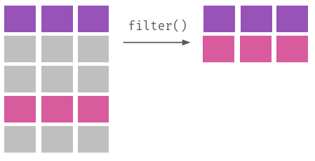
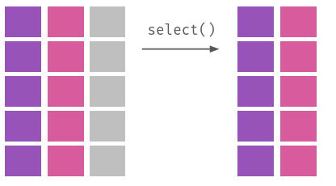
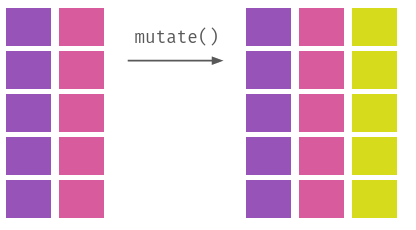
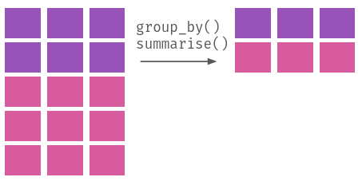
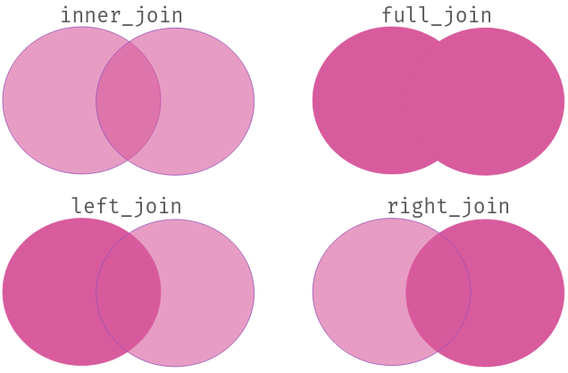

library(tidyverse)3 Manipulação
É raro trabalharmos numa base de dados que já esteja, digamos, pronta. Ter de transformar valores de uma variável, excluir outros, remover ou incluir observações é algo quase compulsório em uma análise de dados. Apesar disso, esse processo essencial em qualquer pesquisa acadêmica ou análise de dados é algo quase ausente em livros de metodologia – normalmente já pressupondo que alguma base de dados existe e que não é necessário modificá-la.
Nossa abordagem é diferente. Assumimos que manipular e limpar bases de dados são etapas fundamentais em uma análise. Também acreditamos que essas etapas não precisam consumir tanto tempo, tampouco exigir esforço manual repetitivo. Mostraremos neste capítulo que é possível realizar diferentes operações de transformação em uma base de dados com poucas ferramentas; e que, como vantagem desse método de manipulação, qualquer pessoa poderá replicar nossos procedimentos desde os menores detalhes – normalmente não documentados.
O trajeto que faremos até o fim deste capítulo também envolverá aprender a pensar numa base de dados de forma um pouco diferente do que estamos habituados. Simplesmente empilhar células numa planilha, ou criar tabelas estruturadas de forma arbitrária, não será suficiente. Isso é o que cobrimos na Seção 3.1. A partir daí, aprenderemos na Seção 3.2 a usar quatro das mais comuns operações de manipulação de dados: filtrar, selecionar, modificar e agrupar/resumir, quer se aplicam mesmo em bases massivas, que não cabem na memória RAM do computador. Finalmente, cobriremos como combinar e cruzar bases de dados na seção Seção 3.3.
Neste capítulo, trabalharemos com coisas como tibbles, importação de dados e manipulação de vetores; caso não tenha familiaridade com estes tópicos, veja o Capítulo 1 e o Capítulo 2. Para acompanhar o material a seguir, também será necessário usar os pacotes dplyr e tidyr, ambos partes do tidyverse voltados para a manipulação de dados, que precisaremos carregar com o comando library(tidyverse):
3.1 Tidy data
Qualquer pessoa minimamente familiarizadas com metodologia de pesquisa sabe que bases com problemas podem invalidar uma análise: esquecer de deflacionar séries de preços em análises históricas, por exemplo, é um problema porque sabemos que R$ 100,00 de hoje não vale o mesmo que R$ 100,00 em 1998. Ainda assim, duas ou mais pessoas minimamente familiarizadas com análise de dados podem divergir sobre como estruturar uma base. Imagine, por exemplo, que tenhamos um pequeno banco de dados com a quantidade de votos de partidos políticos fictícios. Uma forma razoável de organizar estes dados seria assim:
Tabela 3.1: Exemplos de bases de dados com votos de partidos políticos
| Partido | Votos |
|---|---|
| A | 234 |
| B | 451 |
| C | 200 |
| A | B | C |
|---|---|---|
| 234 | 451 | 200 |
Se repararmos bem, ambas as formas de disposição dos dados são consistentes. Cada linha ou coluna contém apenas o mesmo tipo de informação – partido ou votos – e é fácil identificar a estrutura de cada base: na primeira, cada linha indica os atributos de um único partido; já na segunda, cada coluna indica a votação do respectivo partido. Temos exemplos destes dois métodos inclusive em bases que já carregamos no Capítulo 2: o arquivo exemplo.csv está organizado da primeira forma, enquanto que o arquivo populacao_brasil.xls está organizado da segunda.
Ainda que a segunda forma seja útil em determinadas aplicações, daqui até o final do livro trabalharemos com a primeira forma, popularizada pelo estatístico e desenvolvedor de R Hadley como tidy data, ou dados arrumados (Wickham 2014). Nesta estrutura, basicamente três regras são seguidas:
- Cada variável é uma coluna;
- Cada observação é uma linha;
- Cada valor está numa única célula.
Exposto dessa forma, não é óbvio o significado de cada uma dessas regras. Em primeiro lugar, o conjunto desses princípios nos indica que as colunas são compostas por variáveis, que são simplesmente atributos de cada observação. Voltando à nossa tabela inicial, “votos” é uma variável e, portanto, está em uma coluna, pois representa a votação de cada partido. O mesmo vale para o nome do partido, na coluna “partido”, e também para outros atributos do partido, como número de filiados, número de deputados, entre outros. Em outras palavras, uma variável é uma característica de uma observação e, portanto, deve estar em uma coluna.
Em segundo lugar, as linhas indicam os indivíduos ou observações que temos – cada um dos partidos na nossa base, como na tabela anterior. Podemos pensar na observação como a nossa unidade de análise. Poderíamos ter observações repetidas de um mesmo indivíduo ao longo do tempo, como o partido A em 2003 e o partido A em 2004; neste caso, o ano seria uma nova variável na nossa base. Por fim, cada atributo de cada unidade de análise – partidos no nosso caso – está em uma única célula, o que significa que não temos informações repetidas ou ausentes. É o que vemos na tabela anterior: cada partido tem apenas um nome, uma votação e uma sigla.
A Tabela 3.2, a seguir, resume a ideia por detrás das regras de tidy data:
| Regra | Significado | Exemplo |
|---|---|---|
| Cada variável é uma coluna | Cada coluna deve armazenar apenas informações de um mesmo atributo | Votação dos partidos |
| Cada observação é uma linha | Cada linha representa uma unidade de análise ou um indivíduo | Partido A |
| Cada valor está numa única célula | Cada célula contém apenas um valor | 234 |
3.1.1 Espalhar e reunir
Duas operação resumem tudo o que precisamos fazer para estruturar uma base no formato tidy: alongar e reunir. No R, essas operações podem ser feitas usando o pacote tidyr, com a função pivot_longer servindo para alongar valores de uma coluna e, por sua vez, a função pivot_wider para reunir numa única coluna valores dispersos em várias.
Para aprendermos a usar ambas as funções, trabalharemos com um banco de dados contendo informações sobre o número de homicídios ocorridos anualmente nos estados brasileiros entre 2000 e 2009, conforme disponibilizado pelo Ipeadata1 com base nos dados originais do Datasus2. Os dados estão na pasta de materiais complementares deste livro em uma planilha de Excel chamada homicidios_uf.xls. Para carregá-la (ver o Capítulo 2), usaremos a função read_excel do pacote readxl:
library(readxl)
homic <- read_excel("homicidios_uf.xls")Com a função head, podemos visualizar as primeiras observações deste banco.
head(homic)# A tibble: 6 × 13
Sigla Codigo Estado `2000` `2001` `2002` `2003` `2004` `2005` `2006` `2007`
<chr> <chr> <chr> <dbl> <dbl> <dbl> <dbl> <dbl> <dbl> <dbl> <dbl>
1 AC 12 Acre 108 122 151 135 115 125 155 133
2 AL 27 Alagoas 724 836 989 1041 1034 1211 1617 1839
3 AM 13 Amazonas 559 478 512 561 523 598 697 711
4 AP 16 Amapá 155 184 181 190 173 196 203 171
5 BA 29 Bahia 1223 1573 1735 2155 2255 2823 3276 3608
6 CE 23 Ceará 1229 1298 1443 1560 1538 1692 1793 1936
# ℹ 2 more variables: `2008` <dbl>, `2009` <dbl>É possível perceber que a estrutura do banco homic não é tidy: temos várias colunas com alguns anos (que são atributos do momento em que um indivíduo é observado), em vez de uma coluna com número de homicídios e uma coluna para anos. O que gostaríamos de ter, portanto, seria algo mais ou menos assim:
# A tibble: 6 × 5
Sigla Codigo Estado Ano Homicidios
<chr> <chr> <chr> <chr> <dbl>
1 AC 12 Acre 2000 108
2 AC 12 Acre 2001 122
3 AC 12 Acre 2002 151
4 AC 12 Acre 2003 135
5 AC 12 Acre 2004 115
6 AC 12 Acre 2005 125Como fazer essa transformação? Usamos a função pivot_longer, para alongar a base homic que é originalmente larga. Seu uso é simples e requer apenas que passemos a ela o nome do objeto onde está o banco que queremos modificar; e o nome das variáveis que queremos alongar ou preservar como estão no banco. Aplicamos pivot_longer da seguinte forma:
# Carrega o pacote tidyverse
library(tidyverse)
# Reune as variaveis de ano espalhadas pela base 'homic'
homic2 <- pivot_longer(homic, -c(Sigla, Codigo, Estado), names_to = "Ano", values_to = "Homicidios")
# Verifica as primeiras observacoes do novo banco
head(homic2)# A tibble: 6 × 5
Sigla Codigo Estado Ano Homicidios
<chr> <chr> <chr> <chr> <dbl>
1 AC 12 Acre 2000 108
2 AC 12 Acre 2001 122
3 AC 12 Acre 2002 151
4 AC 12 Acre 2003 135
5 AC 12 Acre 2004 115
6 AC 12 Acre 2005 125O resultado da aplicação de pivot_longer é uma base tidy. De forma mais detalhada, a função pivot_longer possui dois argumentos obrigatórios: data, que é o nome do objeto onde está o banco; e cols, que indica quais colunas devem ser alongadas (no nosso exemplo, as colunas 2000, 2001, etc.). O mais importante do código anterior é que declaramos as variáveis a manter como estavam (pois já estavam no formato tidy) com o uso de -c(). Podemos fazer o inverso: indicar quais variáveis devem ser alongadas, em vez de quais devem ser mantidas:
# Reune as variaveis de ano espalhadas pela base 'homic'
homic3 <- pivot_longer(homic, `2000`:`2009`, names_to = "Ano", values_to = "Homicidios")
head(homic3)# A tibble: 6 × 5
Sigla Codigo Estado Ano Homicidios
<chr> <chr> <chr> <chr> <dbl>
1 AC 12 Acre 2000 108
2 AC 12 Acre 2001 122
3 AC 12 Acre 2002 151
4 AC 12 Acre 2003 135
5 AC 12 Acre 2004 115
6 AC 12 Acre 2005 125No exemplo, usamos 2000`:`2009 para indicar o nome de todas as variáveis que queríamos alongar, o que deve ser lido como “selecione todas as variáveis entre 2000 e 2009” (não se preocupe se esse uso de : para selecionar variáveis não fez sentido agora, veremos isso adiante).
A função pivot_longer também possui dois argumentos opcionais: names_to, que é o nome que iremos dar à variável que armazenará o nome das variáveis reunidas (neste caso, “Ano”); e values_to, que é o nome da variável que armazenará os valores das variáveis reunidas. Note que não é necessário declarar os argumentos names_to e values_to, caso no qual a função pivot_longer atribui às novas variáveis os nomes name e value, respectivamente.
# Reune as variaveis de ano espalhadas pela base 'homic'
homic4 <- pivot_longer(homic, -c(Sigla, Codigo, Estado))
head(homic4)# A tibble: 6 × 5
Sigla Codigo Estado name value
<chr> <chr> <chr> <chr> <dbl>
1 AC 12 Acre 2000 108
2 AC 12 Acre 2001 122
3 AC 12 Acre 2002 151
4 AC 12 Acre 2003 135
5 AC 12 Acre 2004 115
6 AC 12 Acre 2005 125
Sobrescrevendo objetos
Ao restruturar a base homic, criamos novos objetos homic2, homic3 e homic4 para não sobrescrever o conteúdo do tibble homic original. Dito de outra maneira, executar homic <- pivot_longer(homic, -c(Sigla, Codigo, Estado)) faria com que o objeto homic original fosse substituído pelo resultado de pivot_longer.
Para desfazer a operação de alongamento, usamos a função inversa, que é pivot_wider. Precisamos passar para ela apenas o nome das variáveis que queremos espalhar em diferentes colunas (vamos usar o tibble homic2 aqui, criado algumas linhas atrás):
# Espalha as variaveis de ano reunidas pela base 'homic'
homic5 <- pivot_wider(homic2, names_from = Ano, values_from = Homicidios)
head(homic5)# A tibble: 6 × 13
Sigla Codigo Estado `2000` `2001` `2002` `2003` `2004` `2005` `2006` `2007`
<chr> <chr> <chr> <dbl> <dbl> <dbl> <dbl> <dbl> <dbl> <dbl> <dbl>
1 AC 12 Acre 108 122 151 135 115 125 155 133
2 AL 27 Alagoas 724 836 989 1041 1034 1211 1617 1839
3 AM 13 Amazonas 559 478 512 561 523 598 697 711
4 AP 16 Amapá 155 184 181 190 173 196 203 171
5 BA 29 Bahia 1223 1573 1735 2155 2255 2823 3276 3608
6 CE 23 Ceará 1229 1298 1443 1560 1538 1692 1793 1936
# ℹ 2 more variables: `2008` <dbl>, `2009` <dbl>Diferentemente de pivot_longer, com pivot_wider temos que passar dois argumentos obrigatórios: names_from, que é o nome da variável que armazena os nomes das variáveis que queremos espalhar; e values_from, que é o nome da variável que armazena os valores das variáveis que queremos espalhar, sem aspas.3
Com estas duas funções podemos tanto colocar em várias colunas valores que estavam agrupados numa única (último exemplo) quanto colocar numa mesma coluna valores que estavam espalhados por várias outras (primeiro exemplo). Na sequência, começaremos a usar o pacote dplyr para manipular bases de dados, mas, quando necessário, recorreremos às funções pivot_ para estruturar inicialmente elas em formato tidy.
3.2 Operacões básicas de manipulação de dados
Com uma base estruturada de forma adequada, podemos realizar outras operações nela (na verdade, frequentemente precisamos realizar operações tidy em várias etapas de limpeza de dados). Neste capítulo, vamos nos concentrar em quatro operações, que chamaremos de verbos:
filtrar, para escolher observações (linhas) para manter ou excluir com base em algum critério;
selecionar, para escolher colunas a manter, reordenar ou remover;
modificar, para criar ou alterar variáveis e observações; e
agrupar, para realizar modificações ou resumos de informações por grupo.
Melhor do que explicar, a Figura 3.1 ilustra visualmente o que cada um desses verbos faz em uma base de dados.




dplyrEnquanto que slice e filter fazem operações horizontais (elas cortam linhas de um banco de dados), select faz operações verticais (ela corta, ou reordena, colunas); mutate, por sua vez, faz operações dos dois tipos, já que podemos usá-la para modificar apenas algumas observações de uma variável quanto adicionar, ou remover, colunas a uma base. Por fim, group_by serve para agrupar observações em um banco, algo útil para calcular estatísticas de um grupo, algo que fazemos com summarise.
Para exemplificar esses principais verbos de manipulação, trabalharemos com alguns dados sobre as despesas realizadas por todas as capitais brasileiras no ano de 2012, disponibilizados pela Secretaria do Tesouro Nacional em seu website.4 A base está no arquivo capitais.Rda nos materiais complementares do livro e pode ser carregada com load. Feito isto, ela ficará salva na memória no objeto capitais no formato tibble.
load("capitais.Rda")3.2.1 Filtrar linhas
A base capitais tem 26 observações e 8 variáveis (lembre-se: você pode usar as funções View, nrow e ncol para checar isso). Começaremos a usar o pacote dplyr para selecionar e filtrar observações. Para fazer isso indicando apenas a posição das linhas, usamos a função slice - passamos um vetor para a função indicando a posição das linhas que queremos remover. Veja alguns exemplos.
# Filtra apenas as cinco primeiras observações do banco capitais
slice(capitais, 1:5)# A tibble: 5 × 8
regiao uf capital populacao despesa_total despesa_assistencia_…¹
<chr> <chr> <chr> <dbl> <dbl> <dbl>
1 Nordeste SE ARACAJU 587701 1150364953. 31383656.
2 Norte PA BELEM 1410430 2110549149 58105215
3 Sudeste MG BELO HORIZO… 2395785 6917817946. 172347581.
4 Norte RR BOA VISTA 296959 491953689. 14018664.
5 Centro-Oeste MS CAMPO GRANDE 805397 2290844087. 39604187.
# ℹ abbreviated name: ¹despesa_assistencia_social
# ℹ 2 more variables: despesa_saude <dbl>, despesa_educacao <dbl># Filtra apenas a primeira e a quinta observações do banco capitais
slice(capitais, c(1, 5))# A tibble: 2 × 8
regiao uf capital populacao despesa_total despesa_assistencia_…¹
<chr> <chr> <chr> <dbl> <dbl> <dbl>
1 Nordeste SE ARACAJU 587701 1150364953. 31383656.
2 Centro-Oeste MS CAMPO GRANDE 805397 2290844087. 39604187.
# ℹ abbreviated name: ¹despesa_assistencia_social
# ℹ 2 more variables: despesa_saude <dbl>, despesa_educacao <dbl># Remove as 10 primeiras observacoes do banco capitais
# e salva o resultado no objeto 'cap'
cap <- slice(capitais, -c(1:10))
head(cap)# A tibble: 6 × 8
regiao uf capital populacao despesa_total despesa_assistencia_social
<chr> <chr> <chr> <dbl> <dbl> <dbl>
1 Nordeste PB JOAO PESSOA 742478 1535075866. 27579724.
2 Norte AP MACAPA 415554 506401565. 6743489.
3 Nordeste AL MACEIO 953393 1530192466. 22125734.
4 Norte AM MANAUS 1861838 2962009189. 101830120.
5 Nordeste RN NATAL 817590 1325168010. 42486957.
6 Norte TO PALMAS 242070 584961477. 20624102.
# ℹ 2 more variables: despesa_saude <dbl>, despesa_educacao <dbl>Enquanto que slice remove linhas baseadas nas suas posições, a outra função para cortar horizontalmente, filter, é muito mais flexível. Com ela, podemos especificar condições para remover observações (e.g., remover observações de capitais cuja despesa total no ano de 2012 seja maior ou menor que algum valor) ou combinações de várias condições. Ela é útil, portanto, para filtrar observações com base em um ou mais critérios, como mostram os exemplos a seguir.
# Filtra observacoes com populacao maior que 2 milhoes habitantes
filter(capitais, populacao > 2000000)# A tibble: 5 × 8
regiao uf capital populacao despesa_total despesa_assistencia_so…¹
<chr> <chr> <chr> <dbl> <dbl> <dbl>
1 Sudeste MG BELO HORIZONTE 2395785 6917817946. 172347581.
2 Nordeste CE FORTALEZA 2500194 4137588203. 78034074.
3 Sudeste RJ RIO DE JANEIRO 6390290 18702324296. 565052833.
4 Nordeste BA SALVADOR 2710968 3618049094. 40981531.
5 Sudeste SP SAO PAULO 11376685 36400104976. 919021471.
# ℹ abbreviated name: ¹despesa_assistencia_social
# ℹ 2 more variables: despesa_saude <dbl>, despesa_educacao <dbl># Filtra observacoes da regiao sul e cria um novo objeto
sul <- filter(capitais, regiao == "Sul")
sul# A tibble: 3 × 8
regiao uf capital populacao despesa_total despesa_assistencia_social
<chr> <chr> <chr> <dbl> <dbl> <dbl>
1 Sul PR CURITIBA 1776761 5115609915. 117962804.
2 Sul SC FLORIANOPOLIS 433158 1080743166. 33082667.
3 Sul RS PORTO ALEGRE 1416714 4122115448. 146233833.
# ℹ 2 more variables: despesa_saude <dbl>, despesa_educacao <dbl>O primeiro argumento recebido por filter, assim como slice, é o nome do objeto com a base de dados (um data.frame ou tibble) e, depois, os critérios usados para filtragem. Algo essencial aqui é que podemos usar qualquer operador lógico (como ==, >, <, >=, <=, !=) para criar condições de filtragem, incluindo combinações de condições, o que é feito com o operador & (e) ou ,. Por exemplo, para filtrar observações com população maior que 500 mil e menor que 1 milhão, podemos usar qualquer uma das duas alternativas a seguir:
# Filtra observacoes com populacao maior que 500 mil e menor que 1 milhao
filter(capitais, populacao > 500000 & populacao < 1000000) # ou
filter(capitais, populacao > 500000, populacao < 1000000)Um uso mais comum de filter é o de combinar critérios com base em diferentes variáveis. Imagine, por exemplo, que queremos filtrar apenas capitais que gastaram mais de R$ 250 milhões em saúde e mais de R$ 300 milhões em educação em 2012. Para isso, usamos filter da seguinte forma:
filter(capitais,
despesa_saude > 250000000,
despesa_educacao > 300000000)Note que, por fazer testes lógicos (que retornam TRUE ou FALSE, geralmente feitos com os operadores lógicos vistos no Capítulo 1), filter pode ser usada para realizar tarefas como remover observações com missings (função is.na()) ou valores extremos. Por exemplo, para remover observações com missings em despesa_saude, podemos usar:
filter(capitais, !is.na(despesa_saude))Finalmente, um uso de filter que não podemos deixar de mencionar é o de manter apenas observações cujos valores de uma variável pertencem a um conjunto de valores – usando, para isso, o operador %in% (visto no Capítulo 1). Por exemplo, para manter apenas capitais que pertencem às regiões Sul ou Sudeste, podemos usar:
filter(capitais, regiao %in% c("Sul", "Sudeste"))Combinando diferentes operadores lógicos e variáveis, podemos realizar uma série de operações de filtragem. Teste as seguintes operações de filtragem para entender melhor algumas dessas possibilidades:
filter(capitais, !uf %in% c("RS", "SP", "MG"))
filter(capitais, regiao == "Sul" | regiao == "Sudeste")
filter(capitais, regiao == "Nordeste" & populacao < 1000000)
filter(capitais, !(regiao == "Nordeste" & populacao < 1000000))3.2.2 Selecionar colunas
Selecionar colunas é algo que usamos com frequência para manter, reordenar ou remover variáveis em uma análise. Para realizar este tipo de operação, usamos a função select5 do pacote dplyr (que é parte do tidyverse e, portanto, é carregado automaticamente quando executamos library(tidyverse)). Um exemplo de como usar select:
# Seleciona apenas as variaveis uf, capital e populacao do banco
cap1 <- select(capitais, uf, capital, populacao)
head(cap1)# A tibble: 6 × 3
uf capital populacao
<chr> <chr> <dbl>
1 SE ARACAJU 587701
2 PA BELEM 1410430
3 MG BELO HORIZONTE 2395785
4 RR BOA VISTA 296959
5 MS CAMPO GRANDE 805397
6 MT CUIABA 561329# Remove a variavel populacao
cap2 <- select(capitais, -populacao)
head(cap2)# A tibble: 6 × 7
regiao uf capital despesa_total despesa_assistencia_…¹ despesa_saude
<chr> <chr> <chr> <dbl> <dbl> <dbl>
1 Nordeste SE ARACAJU 1150364953. 31383656. 391263344.
2 Norte PA BELEM 2110549149 58105215 595930546
3 Sudeste MG BELO HO… 6917817946. 172347581. 2029533813.
4 Norte RR BOA VIS… 491953689. 14018664. 105492562.
5 Centro-Oeste MS CAMPO G… 2290844087. 39604187. 734214086.
6 Centro-Oeste MT CUIABA 1302650057. 32016290. 366936045.
# ℹ abbreviated name: ¹despesa_assistencia_social
# ℹ 1 more variable: despesa_educacao <dbl>O primeiro argumento da função select é o banco de dados que queremos manipular, seguido do nome das variáveis que queremos manter, sem aspas e separadas por vírgula; se quisermos excluir uma variável, colocamos um sinal de subtração, -, antes do seu nome. Além destes usos, também podemos selecionar colunas com select com base na posição delas.
# Mantem apenas a 1a e a 3a colunas
select(capitais, 1, 3)
# Exclui a 1a e a 3a colunas
select(capitais, -1, -3)
select(capitais, -c(1, 3)) # Mesmo resultadoPara diminuir a quantidade de código que precisamos escrever, também podemos usar dois pontos, :, como em vetores, para selecionar colunas, o que deve ser lido como “selecione todas as colunas contidas entre a variável A e B (A:B)”:
# Mantem as colunas entre uf e despesa_total
select(capitais, uf:despesa_total)
# Mantem as colunas entre uf e populacao e a coluna despesa_saude
select(capitais, uf:populacao, despesa_saude)Dado que podemos selecionar colunas com select, é fácil perceber que podemos reordenar, ou mesmo duplicar, colunas com ela. Para isso, basta passar para select as colunas na ordem desejada:
# Reordena as colunas do banco capitais
select(capitais, populacao, uf, capital)
# Duplica a variavel populacao
select(capitais, populacao, uf, capital, populacao)
# Inverte a ordem das colunas
select(capitais, 8:1)3.2.2.1 Funções auxiliares a select
E se tivermos uma base de dados muito grande, com centenas de variáveis? Como selecionar as que queremos manter sem ter que escrever o nome ou a posição de cada uma? Para casos assim, o dplyr nos fornece funções auxiliares para selecionar colunas. Destas, as principais são:
starts_with()eends_with(), para selecionar apenas variáveis cujos nomes contenham algum prefixo ou sufixo.
# Seleciona apenas variaveis que comecem com 'despesa'
cap1 <- select(capitais, starts_with("despesa"))
head(cap1)# A tibble: 6 × 4
despesa_total despesa_assistencia_social despesa_saude despesa_educacao
<dbl> <dbl> <dbl> <dbl>
1 1150364953. 31383656. 391263344. 156571174.
2 2110549149 58105215 595930546 360221999
3 6917817946. 172347581. 2029533813. 1169885015.
4 491953689. 14018664. 105492562. 110284325.
5 2290844087. 39604187. 734214086. 484548412.
6 1302650057. 32016290. 366936045. 277989807.contains(), para selecionar apenas variáveis cujos nomes contenham alguma palavra ou caracteres.
# Seleciona apenas variaveis que contenham 'acao'
cap1 <- select(capitais, contains("acao"))
head(cap1)# A tibble: 6 × 2
populacao despesa_educacao
<dbl> <dbl>
1 587701 156571174.
2 1410430 360221999
3 2395785 1169885015.
4 296959 110284325.
5 805397 484548412.
6 561329 277989807.where(), para selecionar variáveis com base em alguma condição (e.g., manter apenas variáveis numéricas).6
# Seleciona apenas variaveis numericas
select(capitais, where(is.numeric))
# Seleciona variaveis numericas e 'capital'
select(capitais, capital, where(is.numeric))3.2.3 Criar e modificar variáveis
O dplyr não serve apenas para filtrar e selecionar observações e variáveis. Com mutate, podemos alterar variáveis ou adicionar novas a um banco (elas são incluídas no fim do banco, logo após todas as demais). Podemos usá-la, por exemplo, para calcular a despesa total per capita das capitais brasileiras em 2012 – que é igual a despesas total dividida pelo número de habitantes de cada capital.
# Cria a variavel despesa_per_capita
cap1 <- mutate(capitais, despesa_per_capita = despesa_total / populacao)
select(cap1, capital, despesa_total, populacao, despesa_per_capita)# A tibble: 26 × 4
capital despesa_total populacao despesa_per_capita
<chr> <dbl> <dbl> <dbl>
1 ARACAJU 1150364953. 587701 1957.
2 BELEM 2110549149 1410430 1496.
3 BELO HORIZONTE 6917817946. 2395785 2887.
4 BOA VISTA 491953689. 296959 1657.
5 CAMPO GRANDE 2290844087. 805397 2844.
6 CUIABA 1302650057. 561329 2321.
7 CURITIBA 5115609915. 1776761 2879.
8 FLORIANOPOLIS 1080743166. 433158 2495.
9 FORTALEZA 4137588203. 2500194 1655.
10 GOIANIA 2952160894. 1333767 2213.
# ℹ 16 more rowsComo mostra o exemplo anterior, só precisamos passar o nome do banco para a função, o nome da nova variável a ser criada, sem aspas, e o conteúdo dela – que pode ser o resultado de alguma operação aritmética em cima de uma das variáveis do banco. Além da economia de caracteres, a função mutate consegue usar as variáveis já existentes do banco para criar uma nova. Intuitivamente, o que ela faz é nos dar acesso às demais variáveis de forma vetorizada: se quisermos criar uma nova variável que seja igual a o logaritmo natural da variável população, portanto, mutate aplicará o log a cada elemento da variável populacao.
# Cria uma variavel que e' igual ao log de populacao
cap_log <- mutate(capitais, log_populacao = log(populacao))
select(cap_log, capital, log_populacao)# A tibble: 26 × 2
capital log_populacao
<chr> <dbl>
1 ARACAJU 13.3
2 BELEM 14.2
3 BELO HORIZONTE 14.7
4 BOA VISTA 12.6
5 CAMPO GRANDE 13.6
6 CUIABA 13.2
7 CURITIBA 14.4
8 FLORIANOPOLIS 13.0
9 FORTALEZA 14.7
10 GOIANIA 14.1
# ℹ 16 more rowsCom mutate, também podemos criar mais de uma variável por vez:
# Cria tres variaveis de uma so vez
mutate(capitais,
despesa_saude_per_capita = despesa_saude / populacao,
despesa_educacao_per_capita = despesa_educacao / populacao,
despesa_assistencia_social = despesa_assistencia_social / populacao
)Além de criar, podemos modificar variáveis que já temos:
# Substitui a variavel de populacao
mutate(capitais, populacao = populacao / 1000)
Sobrescrevendo variáveis
Ao criar uma variável com o mesmo nome de outra que já existe em uma base de dados, mutate sobrescreve a variável original (desde que o resultado seja salvo no mesmo objeto). Para evitar isso, podemos salvar o resultado de mutate em um novo objeto.
Para além desses usos, mutate também pode ser usada para criar variáveis que tenham algum valor único, isto é, que se repete para todas as observações. Imagine, por exemplo, que queremos criar uma variável que indique o ano à nossa base capitais. Para isso, podemos usar mutate da seguinte forma:
# Cria uma variavel indicando o ano
mutate(capitais, ano = 2012)Como você já deve ter notado, mutate sempre retorna todas as variáveis da base original e adiciona as recém-criadas no final do banco. Podemos alterar esse comportamento por meio de dois argumentos: .keep, que indica quais variáveis queremos manter (o padrão é all); e .before ou .after. Para manter apenas as variáveis criadas, por exemplo, podemos usar .keep = "none":
mutate(capitais,
ano = 2012,
populacao = populacao / 1000,
.keep = "none"
)# A tibble: 26 × 2
populacao ano
<dbl> <dbl>
1 588. 2012
2 1410. 2012
3 2396. 2012
4 297. 2012
5 805. 2012
6 561. 2012
7 1777. 2012
8 433. 2012
9 2500. 2012
10 1334. 2012
# ℹ 16 more rowsE, para posicionar as novas variáveis antes do nome de alguma variável, usamos .before (.after funciona de maneira similar):
mutate(capitais, ano = 2012, .before = regiao)# A tibble: 26 × 9
ano regiao uf capital populacao despesa_total despesa_assistencia_…¹
<dbl> <chr> <chr> <chr> <dbl> <dbl> <dbl>
1 2012 Nordeste SE ARACAJU 587701 1150364953. 31383656.
2 2012 Norte PA BELEM 1410430 2110549149 58105215
3 2012 Sudeste MG BELO H… 2395785 6917817946. 172347581.
4 2012 Norte RR BOA VI… 296959 491953689. 14018664.
5 2012 Centro-Oe… MS CAMPO … 805397 2290844087. 39604187.
6 2012 Centro-Oe… MT CUIABA 561329 1302650057. 32016290.
7 2012 Sul PR CURITI… 1776761 5115609915. 117962804.
8 2012 Sul SC FLORIA… 433158 1080743166. 33082667.
9 2012 Nordeste CE FORTAL… 2500194 4137588203. 78034074.
10 2012 Centro-Oe… GO GOIANIA 1333767 2952160894. 15382878.
# ℹ 16 more rows
# ℹ abbreviated name: ¹despesa_assistencia_social
# ℹ 2 more variables: despesa_saude <dbl>, despesa_educacao <dbl>3.2.3.1 Criando variáveis condicionalmente
Outro uso importante de mutate é em operações condicionais, como quando queremos criar uma variável que assume um determinado valor se uma condição for verdadeira (e.g., a população do município no banco capitais é maior que 500 mil habitantes) e outro valor, caso esta condicação seja falsa. Para tanto, usamos mutate em conjunto com if_else7, que também é uma função do pacote dplyr. Um exemplo:
# Cria uma variavel que indica municipios com mais de 500 mil habitantes
mutate(capitais, capitais_grandes = if_else(populacao > 500000, "Capital de grande porte", "Capital de menor porte"))Para os casos em que temos múltiplas condições para testar – imagine, por exemplo, termos de criar uma variável que indique o porte das capitais em cinco faixas –, podemos usar case_when, que é uma espécie de combinação de vários if_else. Para usá-la, passamos para ela uma sequência de condições e valores, separados por vírgula, que são testadas em sequência – note que o primeiro valor que satisfizer a condição será atribuído à nova variável. Um exemplo:
# Cria uma variavel que indica o porte das capitais
porte <- mutate(capitais, porte = case_when(
populacao < 500000 ~ "Capital de menor porte",
populacao < 1000000 ~ "Capital de porte intermediario",
populacao < 2000000 ~ "Capital de grande porte",
populacao < 5000000 ~ "Capital de grande porte II",
.default = "Capital de grande porte III"
))
select(porte, capital, populacao, porte)# A tibble: 26 × 3
capital populacao porte
<chr> <dbl> <chr>
1 ARACAJU 587701 Capital de porte intermediario
2 BELEM 1410430 Capital de grande porte
3 BELO HORIZONTE 2395785 Capital de grande porte II
4 BOA VISTA 296959 Capital de menor porte
5 CAMPO GRANDE 805397 Capital de porte intermediario
6 CUIABA 561329 Capital de porte intermediario
7 CURITIBA 1776761 Capital de grande porte
8 FLORIANOPOLIS 433158 Capital de menor porte
9 FORTALEZA 2500194 Capital de grande porte II
10 GOIANIA 1333767 Capital de grande porte
# ℹ 16 more rowsDuas coisas a notar: para cada condição declarada em case_when, usamos o operador ~ para indicar o valor que a variável deve assumir caso a condição seja verdadeira, ou seja, TRUE; e usamos .default para indicar o valor que a variável deve assumir caso nenhuma das condições declaradas seja verdadeira.
3.2.4 Agrupar e resumir
summarise, assim como mutate, é usada para modificar variáveis num banco. Mas, diferentemente desta última, ela agrega as informações, retornando um resumo dos dados numa única observação. Um exemplo: calcular a população total das capitais estaduais brasileiras em 2012:
# Calcula a populacao total das capitais
summarise(capitais, populacao_total = sum(populacao))# A tibble: 1 × 1
populacao_total
<dbl>
1 43578158A sintaxe desta função é semelhante a da função mutate: como de praxe, passamos o nome do banco de dados para a função e, depois, o nome da variável que queremos criar seguida do seu conteúdo. Deve ficar nítido, contudo, que summarise colapsa informações em uma única linha – esse é a sua utilidade. Podemos somar valores de variáveis, calcular estatísticas descritivas (média e desvio-padrão, por exemplo), entre outros:
# Calcula estatisticas da populacao das capitais estaduais em 2012
summarise(capitais,
media_populacao = mean(populacao),
mediana_populacao = median(populacao),
desvio_populacao = sd(populacao)
)# A tibble: 1 × 3
media_populacao mediana_populacao desvio_populacao
<dbl> <dbl> <dbl>
1 1676083 891812 2345416.3.2.4.1 Operações dentro de grupos
Com frequência, em vez de resumir todas as informações de um banco em uma única linha, queremos resumir as informações por grupos. Para ilustrar esse uso, vamos calcular agora a população total das capitais estaduais por região do país, isto é, somaremos a população de todas as capitais que pertencem à mesma região (i.e., o mesmo grupo). Para tanto, usamos group_by, que é uma função do dplyr que agrupa as observações de um banco de dados com base em alguma variável:
# Agrupa as observacoes por regiao
capitais_regiao <- group_by(capitais, regiao)
# Calcula a populacao total por regiao
summarise(capitais_regiao, populacao_total = sum(populacao))# A tibble: 5 × 2
regiao populacao_total
<chr> <dbl>
1 Centro-Oeste 2700493
2 Nordeste 11737204
3 Norte 5017906
4 Sudeste 20495922
5 Sul 3626633A base retornada é bem menor, e preserva apenas uma observação por região (para quem usa outros softwares de análise de dados, isto é o equivalente a agregar informações). Fundamental nesse exemplo, para calcular a população total por região usamos summarise em conjunto com group_by. Isso é necessário porque, se usássemos apenas summarise(capitais, populacao_total = sum(populacao)), o R somaria a população de todas as capitais, sem considerar a região a que elas pertencem. Dizendo de outra forma, group_by indica para a função summarise que qualquer operação de resumo de variáveis devem ser feitas dentro dos grupos indicados por ela.
Por si só, group_by não altera nada na base de dados usada, isto é, nenhuma observação ou coluna é alterada. Ao contrário, o que ela faz é um tipo de modificação interna em uma base: é como se ela dividisse um banco em vários sub-bancos especificados por uma ou mais variáveis. Para ver se uma base foi agrupada, basta executar o seu objeto:
capitais_agrupadas_regiao <- group_by(capitais, regiao)
capitais_agrupadas_regiao# A tibble: 26 × 8
# Groups: regiao [5]
regiao uf capital populacao despesa_total despesa_assistencia_…¹
<chr> <chr> <chr> <dbl> <dbl> <dbl>
1 Nordeste SE ARACAJU 587701 1150364953. 31383656.
2 Norte PA BELEM 1410430 2110549149 58105215
3 Sudeste MG BELO HORIZ… 2395785 6917817946. 172347581.
4 Norte RR BOA VISTA 296959 491953689. 14018664.
5 Centro-Oeste MS CAMPO GRAN… 805397 2290844087. 39604187.
6 Centro-Oeste MT CUIABA 561329 1302650057. 32016290.
7 Sul PR CURITIBA 1776761 5115609915. 117962804.
8 Sul SC FLORIANOPO… 433158 1080743166. 33082667.
9 Nordeste CE FORTALEZA 2500194 4137588203. 78034074.
10 Centro-Oeste GO GOIANIA 1333767 2952160894. 15382878.
# ℹ 16 more rows
# ℹ abbreviated name: ¹despesa_assistencia_social
# ℹ 2 more variables: despesa_saude <dbl>, despesa_educacao <dbl>A segunda linha do output indica que a base está agrupada pela variável regiao (Groups: regiao [5]), o que significa que qualquer operação de resumo retornará uma linha para cada região do país:
summarise(capitais_agrupadas_regiao,
media_populacao = mean(populacao),
mediana_populacao = median(populacao),
desvio_populacao = sd(populacao)
)# A tibble: 5 × 4
regiao media_populacao mediana_populacao desvio_populacao
<chr> <dbl> <dbl> <dbl>
1 Centro-Oeste 900164. 805397 394843.
2 Nordeste 1304134. 953393 787062.
3 Norte 716844. 415554 644916.
4 Sudeste 5123980. 4393038. 4868088.
5 Sul 1208878. 1416714 695496.Embora group_by seja mais frequentemente usada em conjunto com summarise, podemos combiná-la com mutate. Imagine, por exemplo, que seja necessário adicionar uma variável à base capitais que seja igual à população das capitais de cada região, isto é, uma variável que some a população de todas as capitais de cada região (e.g., população de Porto Alegre + população de Curitiba + população de Florianópolis para a região Sul). Como fazemos isso? Usamos group_by junto de mutate:
# Agrupa o banco capitais por regiao
cap_regiao <- group_by(capitais, regiao)
# Soma a populacao das capitais
cap_regiao <- mutate(cap_regiao, pop_regiao = sum(populacao))
# Resultado (usando select para selecionar algumas variaveis)
select(cap_regiao, regiao, capital, pop_regiao)# A tibble: 26 × 3
# Groups: regiao [5]
regiao capital pop_regiao
<chr> <chr> <dbl>
1 Nordeste ARACAJU 11737204
2 Norte BELEM 5017906
3 Sudeste BELO HORIZONTE 20495922
4 Norte BOA VISTA 5017906
5 Centro-Oeste CAMPO GRANDE 2700493
6 Centro-Oeste CUIABA 2700493
7 Sul CURITIBA 3626633
8 Sul FLORIANOPOLIS 3626633
9 Nordeste FORTALEZA 11737204
10 Centro-Oeste GOIANIA 2700493
# ℹ 16 more rowsEnquanto uma base estiver agrupada, todas as operações que realizarmos nela serão feitas nos grupos. Para evitar isto, usamos ungroup.
# Agrupa o banco capitais por regiao
cap_regiao <- group_by(capitais, regiao)
# Soma a populacao das capitais
cap_regiao <- mutate(cap_regiao, pop_regiao = sum(populacao))
# Desagrupa o banco
cap_regiao <- ungroup(cap_regiao)
Desagrupando bases resumidas
Se usarmos summarise para criar uma base resumida por grupo, podemos usar o argumento .groups = "drop" para desagrupar a base resultante, sem a necessidade de usar ungroup. Exemplo:
cap_regiao <- group_by(capitais, regiao)
summarise(cap_regiao, pop_regiao = sum(populacao), .groups = "drop")3.2.5 Modificando múltiplas variáveis com mutate e summarise
Os exemplos anteriores mostram como alterar ou resumir variáveis, agrupando elas ou não, de forma individual. No mais das vezes, é isso o que precisamos: transformar apenas uma ou duas variáveis, ou ainda resumir múltiplas informações usando group_by. Em outros casos, porém, precisaremos alterar inúmeras variáveis ao mesmo tempo: imagine, por exemplo, ter de transformar em logaritmo 50 variáveis; com o que vimos anteriormente, isso equivaleria a repetir essa transformação também 50 vezes, uma para cada variável. Algo mais ou menos assim:
# Processo para transformar 50 variaveis (exemplo hipotetico)
df <- mutate(df, var1 = log(var1),
var2 = log(var2),
var3 = log(var3),
... # O codigo continuaria ate chegarmos em var50
)Para evitar as repetições de código, o dplyr oferece uma função auxiliar chamada across para aplicar uma operação a múltiplas variáveis. Seu uso é ligeiramente diferente do que vimos até agora:
# Transforma em logaritmo todas as variaveis numericas
cap <- mutate(capitais, across(where(is.numeric), log))
select(cap, where(is.numeric))# A tibble: 26 × 5
populacao despesa_total despesa_assistencia_…¹ despesa_saude despesa_educacao
<dbl> <dbl> <dbl> <dbl> <dbl>
1 13.3 20.9 17.3 19.8 18.9
2 14.2 21.5 17.9 20.2 19.7
3 14.7 22.7 19.0 21.4 20.9
4 12.6 20.0 16.5 18.5 18.5
5 13.6 21.6 17.5 20.4 20.0
6 13.2 21.0 17.3 19.7 19.4
7 14.4 22.4 18.6 20.8 20.5
8 13.0 20.8 17.3 19.2 19.3
9 14.7 22.1 18.2 21.0 20.4
10 14.1 21.8 16.5 20.7 20.2
# ℹ 16 more rows
# ℹ abbreviated name: ¹despesa_assistencia_socialEm vez de especificar o nome de cada variável que será criada ou modificada, across aplica uma operação a todas as variáveis que satisfaçam uma determinada condição. De forma esquemática, toda chamada da função across contém duas partes: primeiro, indicamos quais variáveis serão modificadas (no exemplo, usamos where(is.numeric) para selecionar todas as variáveis numéricas da base); segundo, indicamos qual operação faremos nas variáveis selecionadas (no caso, usamos log).
across é flexível o suficiente para permitir, também, usá-la para resumir variáveis de um banco. Podemos, por exemplo, calcular a média de todas as variáveis numérica da base capitais com:
# Calcula a media de todas as variaveis numericas
summarise(capitais, across(where(is.numeric), mean))# A tibble: 1 × 5
populacao despesa_total despesa_assistencia_s…¹ despesa_saude despesa_educacao
<dbl> <dbl> <dbl> <dbl> <dbl>
1 1676083 4176143826. 102628661. 949270809. 798449762.
# ℹ abbreviated name: ¹despesa_assistencia_socialacross, como dá para imaginar, também pode ser usada junto de group_by para resumir variáveis por grupo. Para calcular a média de todas as variáveis numéricas da base capitais por região, por exemplo, usamos:
cap <- group_by(capitais, regiao)
summarise(cap, across(where(is.numeric), mean))# A tibble: 5 × 6
regiao populacao despesa_total despesa_assistencia_social despesa_saude
<chr> <dbl> <dbl> <dbl> <dbl>
1 Centro-Oeste 900164. 2181885013. 29001118. 693170960.
2 Nordeste 1304134. 2235820825. 37825580. 664463187.
3 Norte 716844. 1159226954. 34821304. 264852902.
4 Sudeste 5123980. 15869659949. 424970795. 3077616245.
5 Sul 1208878. 3439489509. 99093101. 818974725.
# ℹ 1 more variable: despesa_educacao <dbl>Indo além, across não está limitada a usarmos where para selecionar variáveis – é possível usar qualquer lógica de seleção válida para a função select, que vimos anteriormente. Desse modo, todos os seguintes usos são válidos (teste cada um deles):
# Transforma em logaritmo todas as variaveis que comecem com 'despesa'
mutate(capitais, across(starts_with("despesa"), log))
# Resume apenas variaveis selecionadas pelo nome
summarise(capitais, across(c(populacao, despesa_total), median))
# Calcula valores per capita das variaveis de despesa
mutate(capitais, across(contains("despesa"), \(x) x / populacao))No último exemplo, usamos o que é chamado de função anônima para aplicar uma operação a todas as variáveis que satisfazem uma determinada condição, usando x como uma espécie de coringa – o que o R interpreta como sendo cada uma das variáveis selecionadas por contains("despesa").8 Aqui, o \(x) sempre deve ser colocado para indicar que queremos aplicar uma operação a cada uma das variáveis selecionadas. Para entender melhor como isso funciona, teste o seguinte código:
3.2.6 Encadeando operações com pipes
TODO.
3.2.7 Outras operações úteis: ordernar, renomear e sortear
Embora não seja o objetivo do capítulo cobrir todas as possibilidades de manipulação de bancos de dados, o dplyr contém algumas funções que podem ser extremamente úteis em determinadas situações. Reordenar observações de acordo com os valores de uma variável (por exemplo, ordenando o banco capitais pelo tamanho de suas populações) poderia ser uma delas. Selecionar aleatoriamente apenas algumas observações de um banco para ter uma amostra, outra. Longe de esgotar as possibilidades do pacote, listamos aqui algumas funções que nos ajudam a resolver estes e outros problemas específicos (é recomendável reproduzir esses exemplos para fixar as funções de interesse). Seguem:
# arrange() serve para ordenar as observacoes de um banco
head(arrange(capitais, populacao))
# rename() serve para renomear uma variavel (nome atual vem na frente, seguido do nome antigo)
names(capitais) # nomes atuais
capitais |>
rename(populacao_novo = populacao)
names(capitais) # novos nomes
capitais |>
rename(populacao = populacao_novo, SAUDE = despesa_saude)
names(capitais) # nomes novos 2
# sample_n() sorteia apenas algumas obsvervacoes de um banco
sample_frac(capitais, 2) # sorteia duas capitais
sample_frac(capitais, 3) # sorteia tres capitais3.2.8 Manipulando bases muito grandes
E se quisermos manipular grandes bases de dados, grandes o suficiente para não caberem na memória RAM do computador? No Capítulo 2, vimos que podemos usar o pacote DBI junto do duckdb para ler essas bases em instâncias intermediárias – bancos de dados relacionais gerenciados pelo DuckDB. A grande vantagem dessa solução é que ela é totalmente integrada ao tidyverse: uma vez importando via DuckDB, podemos manipular uma base usando todas as funções9 do dplyr. Para ilustrar, vamos importar novamente a base de microdados de pessoas do Censo de 2010 (Pereira e Barbosa 2023) usando DBI e duckdb:
library(duckdb)
library(DBI)
con <- dbConnect(duckdb::duckdb())
censo <- tbl(con, "2010_population_v0.2.0.parquet")Com o banco importado para o DuckDB, podemos manipulá-lo normalmente com dplyr – que traduzirá nosso código em R para algo que o DuckDB entenda. Para selecionar apenas as três primeiras colunas da base de microdados, por exemplo, podemos usar select assim:
select(censo, 1:3)# Source: SQL [?? x 3]
# Database: DuckDB v0.9.2 [fmeireles@Linux 6.6.6-100.fc38.x86_64:R 4.3.2/:memory:]
code_muni code_state abbrev_state
<chr> <chr> <chr>
1 1100015 11 RO
2 1100015 11 RO
3 1100015 11 RO
4 1100015 11 RO
5 1100015 11 RO
6 1100015 11 RO
7 1100015 11 RO
8 1100015 11 RO
9 1100015 11 RO
10 1100015 11 RO
# ℹ more rowsOu, outro exemplo, podemos usar summarise para calcular o tamanho da população brasileira em 2010 de acordo com os dados do Censo de 2010 (usando a variável V0010 da base, que contém os pesos amostrais, isto é, o quanto cada linha representa em termos de habitantes):
summarise(censo, populacao = sum(V0010))# Source: SQL [1 x 1]
# Database: DuckDB v0.9.2 [fmeireles@Linux 6.6.6-100.fc38.x86_64:R 4.3.2/:memory:]
populacao
<dbl>
1 190755799.Se quisermos saber a população de cada região, basta incluir antes uma chamada à função group_by, para agrupar a base:
censo |>
group_by(name_region) |>
summarise(populacao = sum(V0010))# Source: SQL [5 x 2]
# Database: DuckDB v0.9.2 [fmeireles@Linux 6.6.6-100.fc38.x86_64:R 4.3.2/:memory:]
name_region populacao
<chr> <dbl>
1 Norte 15864454.
2 Nordeste 53081950.
3 Sul 27386891.
4 Centro-oeste 14058094.
5 Sudeste 80364410.Em todos os casos, se quisermos salvar o resultado das operações em um objeto é necessário usar a função collect. A razão disso decorre do fato de que, ao usar dplyr com bancos de dados, o resultado das operações não é salvo na memória RAM, mas sim no DuckDB. Usando collect para trazer o resultado para a memória RAM, o código anterior ficaria assim:
consulta <- censo |>
group_by(name_region) |>
summarise(populacao = sum(V0010)) |>
collect()
consulta# A tibble: 5 × 2
name_region populacao
<chr> <dbl>
1 Norte 15864454.
2 Sudeste 80364410.
3 Centro-oeste 14058094.
4 Nordeste 53081950.
5 Sul 27386891.Como se percepe pelo output do R, o objeto exibido agora é um tibble com o resultado da operação.
3.3 Cruzar e combinar dados
Até aqui, cobrimos algumas das principais operações de manipulação de dados: sabemos como chegar ao formato tidy e como filtrar linhas e selecionar, criar, modificar e resumir colunas de uma base. O que ainda não vimos é como cruzar dados de diferentes bases – algo geralmente necessário em pesquisas reais.
Para aprendermos a fazer cruzamentos, usaremos duas bases de dados com informações sobre as cinco regiões do país. Para carregar as duas bases, chamadas de regioes e territorio e que estão no arquivo regioes.Rda10, pode usar a função load:
load("regioes.Rda")Executando os objetos no console, você verá que cada tibble contém uma coluna chamada regiao, que indica o nome de cada uma das regiões do país. Importante para os nossos exemplos, a base territorio tem uma linha a menos, pois não contém a região Sul. Além disso, a grafia da região Centro-Oeste está diferente nas duas bases: na base regioes, usa-se hífen; na territorio, não.
regioes# A tibble: 5 × 2
regiao populacao
<chr> <dbl>
1 Norte 15864454
2 Nordeste 53081950
3 Centro-Oeste 14058094
4 Sudeste 80364410
5 Sul 27386891territorio# A tibble: 4 × 2
regiao km2
<chr> <dbl>
1 Norte 3853840
2 Nordeste 1554291
3 Centro Oeste 1606234
4 Sudeste 9246083.3.1 Cruzamentos e colunas-chave
Para cruzar dados de diferentes bases, usamos as funções _join do pacote dplyr, como left_join, inner_join, full_join e right_join. A diferença entre elas é a forma de combinar as informações das bases. Para entender melhor, vamos cruzar as duas bases de dados que temos usando left_join:
left_join(regioes, territorio, by = join_by(regiao == regiao))# A tibble: 5 × 3
regiao populacao km2
<chr> <dbl> <dbl>
1 Norte 15864454 3853840
2 Nordeste 53081950 1554291
3 Centro-Oeste 14058094 NA
4 Sudeste 80364410 924608
5 Sul 27386891 NAA explicação do código é a seguinte: left_join combina as informações de duas bases de dados, mantendo todas as linhas da base à esquerda (no caso, regioes) e adicionando as informações da base à direita (no caso, territorio) quando houver correspondência entre as variáveis usadas para cruzar as bases (no caso, usamos regiao == regiao, passado no argumento by = join_by(regiao == regiao), para dizer que a informação contida na coluna regiao de uma base tem correspondência na coluna regiao da outra). Em outras palavras, para cada região do país na base regiões, a sua correspondente foi buscada na base territorio e, se encontrada, as informações da coluna km2 foram adicionadas à base regioes como uma nova coluna.11
O resultado do cruzamento das bases regioes e territorio também ilustra o que acontece quando falta correspondência entre valores. Como a base territorio não contém a região Sul, a linha correspondente a essa região na base regioes ficou com valores faltantes na coluna km2; adicionalmente, dado que a grafia da região Centro-Oeste estava diferente nas duas bases, left_join não encontrou um valor de km2 na base territorios para preencher.
O que podemos tirar de lição geral do exemplo de left_join é que para adicionarmos variáveis a um banco de dados a partir de informações específicas (Sudeste com Sudeste, Norte com Norte, etc.) precisamos de variáveis que possuam valores comuns em duas bases. Isso significa que não podemos combinar duas bases que não partilhem informações comuns, chamadas convencionalmente de colunas-chave: só foi possível cominar as bases regioes e territorio porque ambas têm uma variável com o nome das macrorregiões do Brasil, e é a partir delas que junção das bases foi feita: como Sudeste em uma das bases é igual a Sudeste na outra, o R entende que as linhas que contêm essa informação devem ser mantidas lado a lado. O que a função left_join faz, portanto, é combinar bases a partir de valores comuns de variáveis de ambas.
Colunas-chave e cruzamentos
Para cruzar duas bases de dados, precisamos de variáveis que possuam valores comuns em ambas, as colunas-chave, que podem ser nomeadas de formas diferentes nas duas bases – mas precisam ser da mesma classe.
3.3.2 Funções _join
De forma prática, a função left_join (e as demais funções _join) possui três argumentos principais. O primeiro indica a primeira base de dados usada na junção dos dados; a segunda, a outra base que será unida à primeira; por fim, usamos o argumento by para indicar quais variáveis são comuns nas duas bases. Esse último argumento é o principal da função, já que é com ele que informamos ao R como unir as variáveis.
left_join, contudo, é apenas uma das funções contidas no pacote dplyr. Além disso, ela realiza essa operação de forma específica: como o left_ indica, ela cruza valores da segunda base passada à função para a primeira. A consequência desse procedimento, desse modo, é que todas as observações do primeiro banco (regioes) são preservadas, e as da segunda base são usadas para preencher os casos comuns.
E se quisermos manter todas as observações da base territorio e usar as da base regioes para preencher valores de população? Para além da solução mais óbvia (trocar territorio e regioes de lugar), podemos usar right_join:
right_join(regioes, territorio, by = join_by(regiao == regiao))# A tibble: 4 × 3
regiao populacao km2
<chr> <dbl> <dbl>
1 Norte 15864454 3853840
2 Nordeste 53081950 1554291
3 Sudeste 80364410 924608
4 Centro Oeste NA 1606234O resultado é autoexplicativo. O dplyr também possui outras variantes de _join úteis. Considere essas duas:
inner_join(regioes, territorio, by = join_by(regiao == regiao))# A tibble: 3 × 3
regiao populacao km2
<chr> <dbl> <dbl>
1 Norte 15864454 3853840
2 Nordeste 53081950 1554291
3 Sudeste 80364410 924608full_join(regioes, territorio, by = join_by(regiao == regiao))# A tibble: 6 × 3
regiao populacao km2
<chr> <dbl> <dbl>
1 Norte 15864454 3853840
2 Nordeste 53081950 1554291
3 Centro-Oeste 14058094 NA
4 Sudeste 80364410 924608
5 Sul 27386891 NA
6 Centro Oeste NA 1606234Como é possível depreender, inner_join e full_join cruzam dados de formas inteiramente diferentes: no primeiro caso, apenas linhas que possuem correspondência nas duas bases são mantidas; no segundo, todas as linhas são mantidas, mesmo que não haja correspondência entre as bases.
Em vez de termos de memorizar cada nome de função, uma forma mais intuitiva de entender suas diferentes utilidades é por meio de um diagrama de Venn como o que segue. Nele, cada círculo representa uma base de dados, e as interseções entre eles indicam as observações que serão mantidas em cada função. O que fica patente é que left_join e right_join são complementares: o que uma função mantém, a outra exclui, assim como inner_join e full_join. A depender do caso – e do que queremos manter –, uma ou outra função será mais útil.

_join3.3.3 Controlando o comportamento das funções _join
Na maioria das vezes, o que cobrimos é o suficiente para cruzar duas bases. Algo que não vimos em maior detalhe é que, quando os nomes das colunas-chave em duas bases são diferentes, precisamos usar o argumento by de forma diferente. Para entender como, imagine que temos agora uma base chamada regioes2 que contém as mesmas informações de regioes, mas com o nome da coluna-chave diferente:
regioes2 <- regioes |>
rename(regiao2 = regiao)Se tentarmos cruzar regioes2 com territorio usando o código que já vimos anteriormente, teremos um erro:
left_join(regioes2, territorio, by = join_by(regiao == regiao))Error in `left_join()`:
! Join columns in `x` must be present in the data.
✖ Problem with `regiao`.Nestes casos, precisamos usar o argumento by de forma diferente. Em vez de passar uma expressão regiao == regiao, vamos precisar indicar que a coluna regiao2 da base regioes2 é igual à coluna regiao da base territorio:
left_join(regioes2, territorio, by = join_by(regiao2 == regiao))# A tibble: 5 × 3
regiao2 populacao km2
<chr> <dbl> <dbl>
1 Norte 15864454 3853840
2 Nordeste 53081950 1554291
3 Centro-Oeste 14058094 NA
4 Sudeste 80364410 924608
5 Sul 27386891 NAO resultado, agora, não retorna erro – exatamente porque especifica quais colunas têm correspondência entre as bases.
Outro alerta comum ao usar funções _join é o de multiple matches, que ocorrem quando há mais de uma correspondência entre as bases, isto é, quando uma mesma observação da base à esquerda tem mais de uma correspondência na base à direita. Para entender melhor o ponto, vamos criar uma base de dados chamada regioes3 que contém duas observações para a região Sudeste (transformando a região Sul em Sudeste com if_else):
regioes3 <- regioes |>
mutate(regiao = if_else(regiao == "Sul", "Sudeste", regiao))Se tentarmos cruzar regioes3 com territorio, não teremos erro:
left_join(territorio, regioes3, by = join_by(regiao == regiao))# A tibble: 5 × 3
regiao km2 populacao
<chr> <dbl> <dbl>
1 Norte 3853840 15864454
2 Nordeste 1554291 53081950
3 Centro Oeste 1606234 NA
4 Sudeste 924608 80364410
5 Sudeste 924608 27386891O código roda sem problemas e, como resultado, as duas linhas da região Sudeste são mantidas – mas, se você rodou o código localmente, verá que o R emite uma mensagem avisando que há múltiplas correspondências. Caso esse seja o resultado que você espera da operação, basta usar o argumento relationship = "many-to-many", ou relationship = "one-to-many", para indicar que todas as correspondências devem ser mantidas:
left_join(regioes3, territorio, by = join_by(regiao == regiao), relationship = "many-to-many")# A tibble: 5 × 3
regiao populacao km2
<chr> <dbl> <dbl>
1 Norte 15864454 3853840
2 Nordeste 53081950 1554291
3 Centro-Oeste 14058094 NA
4 Sudeste 80364410 924608
5 Sudeste 27386891 924608Caso isso não seja o que você espera, é necessário investigar o que está acontecendo – em geral, avisos de múltiplas correspondências podem indicar linhas duplicadas ou outros problemas em uma base quando não esperamos o aviso.
3.3.4 Empilhando bases
Para fechar esta seção sobre cruzamentos, vamos falar sobre outro tipo comum de combinar bases: o empilhamento, isto é, quando queremos combinar duas bases que possuem as mesmas variáveis, mas com observações diferentes. Em casos assim, usamos a função bind_rows:
bind_rows(regioes, regioes3)# A tibble: 10 × 2
regiao populacao
<chr> <dbl>
1 Norte 15864454
2 Nordeste 53081950
3 Centro-Oeste 14058094
4 Sudeste 80364410
5 Sul 27386891
6 Norte 15864454
7 Nordeste 53081950
8 Centro-Oeste 14058094
9 Sudeste 80364410
10 Sudeste 27386891O resultado é uma base de dados empilhada, que contém todas as observações de regioes e regioes2 – algo útil quando queremos, por exemplo, combinar dados de diferentes anos, ou de diferentes estados, em uma única base.
3.4 Resumo do capítulo
Este capítulo sobre manipulação de dados começou com uma breve introdução sobre o formato tidy, que é o formato ideal para a maioria das operações de manipulação de dados. Em seguida, vimos como filtrar linhas de uma base de dados com filter, selecionar colunas com select, criar e modificar variáveis com mutate e resumir informações com summarise. Também vimos como agrupar e resumir informações com group_by e summarise, e como modificar múltiplas variáveis com across. Por fim, vimos como cruzar dados de diferentes bases com left_join, right_join, inner_join e full_join, e como empilhar bases com bind_rows.
Estes dados podem ser obtidos diretamente pelo website do Ipeadata: http://www.ipeadata.gov.br/.↩︎
O website do Datasus, do qual estes dados também podem ser obtidos, é: http://datasus.saude.gov.br/.↩︎
Muitas vezes é confuso o uso ou não de aspas ao passar o nome de variáveis para alguma função em R. Via de regra, funções do
tidyversedispensam as aspas, algo chamado de tidy evaluation e que tem como objetivo facilitar a escrita de código.↩︎Os dados completos podem ser obtidos no endereço: http://www.tesouro.fazenda.gov.br/pt_PT/contas-anuais.↩︎
Não raro podemos ter alguns problemas ao usar a função
selectquando estamos com o pacoteMASScarregado: ambos possuem uma função chamadaselect, o que pode gerrar erros comoError in select(...) : unused argument (...). Nestes casos, temos duas opções: (1) descarregar o pacoteMASScomdetach("package:MASS", unload = T), ou, (2), usar a funçãoselectcomdplyr::select.↩︎Em versões anteriores do
dplyr, a funçãoselect_ifera usada como padrão para selecionar colunas com base em alguma condição. A partir da versão 1.0.0, no entanto, a funçãowherepassou a ser o padrão recomendado para esse tipo de uso.↩︎Existe outra função,
ifelse, noR-baseque cumpre a mesma função deif_else, mas é de forma geralmente mais lenta que esta. Para uma dicussão deste e de outros problemas deifelse, ver Spector (2008).↩︎Entender como
acrossemutatefuncionam por meio de funções anônimas envolve estudar tópicos como controle de fluxo e programação funcional, algo que extrapola os objetivos deste livro. Para quem quiser aprender sobre, o melhor lugar para começar é o capítulo 26 da segunda edição do livro R for Data Science, de Wickham, Çetinkaya-Rundel, e Grolemund (2023).↩︎Algumas funções específicas do
dplyr, na verdade, não possuem equivalentes que podem ser traduzidos para SQL, a linguagem de consulta utilizada pela maioria dos sistemas de gerenciamento de bancos relacionais. Para uma visão geral sobre os casos em que é possível usardplyrcom bancos de dados, ver a documentação do pacote dbplyr, responsável por traduzir código em R para SQL.↩︎É possível salvar mais de um objeto ou base de dados em um arquivo
.Rda. Para isso, basta separar os objetos por vírgula na hora de salvá-los (e.g.,save(df1, df2, df3, file = "dados.Rda")).↩︎Um insight útil da documentação do pacote
dplyré o de que as funções_joinsão chamadas de mutate join justamente porque funcionam comomutate(), adicionando novas colunas a uma base. Ver, por exemplo, a documentação deleft_joincom?left_join.↩︎